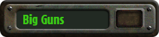
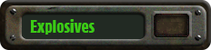

Help
Category:Weapons
From FOnline 2 Wiki
Jump to navigation
Jump to search


Pages in category "Weapons"
The following 98 pages are in this category, out of 98 total.
"
"Little Jesus"
.
.223 Pistol
.44 Magnum (Speed Load)
.44 Magnum Revolver
1
10mm Pistol
10mm SMG
14mm Pistol
9
9mm Mauser
A
Alien Blaster
Assault Rifle
Assault Rifle (Exp. Mag.)
Avenger Minigun
B
Boxing Gloves
Bozar
Brass Knuckles
C
Cattle Prod
Club
Combat Knife
Combat Shotgun
Crowbar
D
Desert Eagle (Exp. Mag.)
Desert Eagle .44
Dynamite
E
Eli's knife
F
Flamer
FN FAL
G
Gatling Laser
Grenade (Frag)
Grenade (Plasma)
Grenade (Pulse)
H
H&K CAWS
H&K G11
H&K G11E
Hatchet
HK P90c
Hunting Rifle
I
Improved Flamer
K
Knife
L
Laser Pistol
Laser Rifle
Laser Rifle (Ext. Cap.)
Light Support Weapon
Louisville Slugger
M
M3A1 "Grease Gun" SMG
M60
M72 Gauss Rifle
Magneto-Laser Pistol
Mega Power Fist
Mine
Minigun
Molotov Cocktail
N
Needler Pistol
P
Pancor Jackhammer
Phazer
Pickaxe
Pipe Rifle
Plant Spike
Plasma Gatling
Plasma Pistol
Plasma Pistol (Ext. Cap.)
Plasma Rifle
Plastic Explosives
Plated Boxing Gloves
Power Fist
PPK12 Gauss Pistol
Primitive Tool
R
Red Ryder BB Gun
Red Ryder LE BB Gun
Refined Uranium Ore
Ripper
Rock
Rocket Launcher
S
Sawed-Off Shotgun
Scoped Hunting Rifle
Sharpened Pole
Sharpened Spear
Shiv
Shotgun
Shovel
Signal Flare
Sledgehammer
Sniper Rifle
Solar Scorcher
Spear
Spiked Knuckles
Super Cattle Prod
Super Sledge
Switchblade
T
Throwing Knife
Tommy Gun
Turbo Plasma Rifle
V
Vindicator Minigun
W
Wakizashi Blade
Wrench
X
XL70E3
Y
YK32 Pulse Pistol
YK42B Pulse Rifle
Z
Zip Gun
Navigation menu
Personal tools
Create account
Log in
Namespaces
Category
Discussion
Variants
expanded
collapsed
Views
Read
View source
View history
More
expanded
collapsed
Search
Navigation
Main page
Recent changes
Random page
Help about MediaWiki
Tools
What links here
Related changes
Special pages
Printable version
Permanent link
Page information